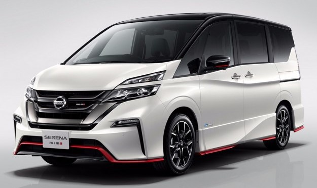

Los todoterrenos son coches robustos con traccion en las 4 ruedas y su mejor baza es que pueden moverse con facilidad por terrenos dificiles.
Este tipo de vehiculos pueden soportar mucha carga y admiten un elevado numero de ocupantes.
Algunos de estos coches son incluso familiares (cada vez se ven mas este tipo de vehiculos en las grandes ciudades).
En general, son perfectos para hacer excusiones e ir en busca de aventuras.
En este segmento también encontramos los 4x4 y las tipicas rancheras diseñadas bajo el concepto pick up (la parte de atras es descapotable, hecho que facilita la carga y descarga de materiales).
Audi es una empresa alemana fabricante de vehículos de alta gama, lujo y de competición con presencia global. Su sede central se encuentra en Ingolstadt, Baviera y forma parte desde 1965 del Grupo Volkswagen. August Horch (1868-1951), uno de los pioneros de la industria automovilística alemana, fundó en Colonia (Alemania) la empresa de autos Horch en 1899, cuyo primer automóvil comenzó a circular por vías públicas en 1901. Después de algunas dificultades financieras y desavenencias internas, decidió abandonar la compañía para crear una nueva fábrica de automóviles. Así nació la empresa automovilística llamada «August Horch & Cie. Motorwagenwerke AG» en Zwickau, el 16 de julio de 1909. Como Horch perdió la disputa legal por el nombre de la compañía, que ya estaba registrado anteriormente, no pudo volver a utilizar su apellido y escogió el nombre «Audi», la traducción al latín del vocablo alemán «horch», que en español significa «oye» o «escucha». Por ello, meses después de su fundación cambió el nombre de la compañía a «Audi Automobilwerke». El Audi Q7 es un vehículo deportivo utilitario del segmento F producido por el fabricante de automóviles alemán Audi. Fue presentado en el Salón del Automóvil de Frankfurt de 2005, y su comercialización comenzó en marzo de 2006. Tiene motor delantero longitudinal, tracción a las cuatro ruedas y carrocería de cinco puertas. Sus principales rivales son el Bentley Bentayga, Maserati Levante, Mercedes-Benz Clase GLS, Porsche Cayenne, Volvo XC90 y Range Rover. El modelo Q7 de la empresa alemana Audi, englobado en la categoría SUV, apareció por primera vez en 2005. Inspirándose en la idea original de Ferdinand Piëch, Audi fue el primer fabricante en incorporar tracción total a sus modelos, como pasó con el ya mítico Audi Quattro, uno de los clásicos de las competiciones más antiguas. Sin embargo, hasta la fecha Audi sólo incorporaba la tracción total a sus modelos de alta gama, aunque nunca se había probado en un modelo SUV. El Audi Q7 fue el primero de su gama en incorporar esta novedad en la tracción, que se apoyaba en todas las ruedas del automóvil. Visto el éxito que alcanzó este modelo, en noviembde de 2008 se decidió incorporarla también a una versión similar, aunque más pequeña, del BMW X3, llamado P5. En su diseño se utilizó también la experiencia adquirida en el segmento de otros SUV del grupo Volkswagen, como el Touareg o el Porsche Cayenne. El creador de su diseño, Walter da Silva, vio reconocido su éxito al ser nombrado director de diseño del Grupo Volkswagen.
Jeep es una marca de automóviles todoterreno creada por la compañía Willys-Overland en 1941, y que hoy día es una división de FCA US LLC, una subsidiaria del grupo automovilístico Fiat Chrysler Automobiles. La historia de Jeep comienza oficialmente en 1941 cuando Ford y Willys-Overland comenzaron a fabricar vehículos Jeep en sus fábricas de Ohio, Estados Unidos Pero fue en 1938 cuando se planeó cómo iba a ser el Jeep. En 1940 el Ejército de los Estados Unidos pidió a los fabricantes de vehículos estadounidenses que presentaran ofertas para un vehículo pequeño, con tracción a las cuatro ruedas que pudiera servir para diferentes tareas y misiones, con sobresalientes capacidades de desempeño, estabilidad, autonomía, confiabilidad y mantenimiento. Esta solicitud se hizo más urgente cuando las fuerzas del Eje comenzaron a obtener victorias en Europa y África del Norte, por lo cual el ejército norteamericano aceptaría solo propuestas que pudieran cumplirse en un lapso de 49 días. Las especificaciones originales del gobierno norteamericano fueron las siguientes: peso máximo de 1310 libras (594,20 kg), tracción en las cuatro ruedas, una distancia entre ejes inferior a 2032 mm, y una distancia entre ruedas menor que 1193 mm; la distancia mínima al suelo debía ser de 158 mm y debería ser lo suficientemente capaz como para transportar 605 lb (274,42 kg) de peso y sin recalentar el motor al marchar a bajas velocidades. Las dos compañías que cumplieron la solicitud fueron la American Bantam Car Company y Willys-Overland. Bantam encargó al ingeniero Karl Probst el diseño del nuevo vehículo que se convertiría luego en el mítico Jeep. Probst comenzó a trabajar el 17 de julio de 1940 y completó los planos originales en apenas dos días. Bantam entregó al ejército el sobre con los diseños del vehículo el 22 de julio; curiosamente Bantam afirmaba que el vehículo cumplía con las especificaciones requeridas aunque en realidad excedía el peso límite. Bantam terminó su primer prototipo hecho a mano el 21 de septiembre de 1940, cumpliendo con el plazo de 49 días. El ejército sometió al vehículo a varias pruebas en trayectos que totalizaron más de 5500 km, de los cuales apenas 400 eran asfaltados. Concluyeron que el vehículo mostraba una gran potencia y cumplía con los requerimientos del Ejército de los Estados Unidos. Delmar "Barney" Roos, propietario de Willys-Overland, añadió un comentario positivo a la rechazada oferta de Willys diciendo «es imposible que ningún vehículo sea fuerte con un peso de 1300 libras». Explicó esto al mayor H. J. Lawes, el oficial encargado de las compras y contratos del campamento Holabird y sugirió que Willys-Overland construyera su propio modelo piloto para probarlo. También ayudó que el ejército dejó a Ford y Willys «inspeccionar» el modelo de Bantam, mejorando las dos marcas sus modelos, que se acabaron pareciendo sospechosamente al prototipo de Bantam. Debido a las limitaciones técnicas y financieras de Bantam, el Ejército entregó a Willys-Overland y a la compañía Ford los planos originales de Bantam, con el fin de que presentaran sus propios prototipos. Willys presentó el "Quad", y Ford presentó el "Pygmy", incorporando modificaciones al diseño original de Bantam cuyo peso finalmente fue de 2030 libras (1044,09 kg). El Willys Quad excedía demasiado el peso inicial especificado debido a que llevaba un mejor motor que luego se conocería como el célebre Go Devil. Esto resultó ventajoso para Willys ya que el límite de peso permitido fue incrementado a 2160 lb (979,75 kg), con lo cual el Quad fue el único prototipo en complacer enteramente los requerimientos del ejército: sus aplastantes 105 lb/pie de par motor excedían el par motor solicitado y era muy superior a las 83 lb/pie de par motor ofrecidas por Bantam y las 85 lb/pie de par motor del prototipo de Ford. Teniendo los prototipos de las tres empresas, el ejército hizo un pedido de 4500 vehículos, 1500 a cada una de ellas, para probarlos en el terreno. El equipo de Roos comenzó a trabajar para aligerar el Quad. Lo desmontó por completo y analizó cada una de las piezas para ver si existía la posibilidad de utilizar un material más ligero en alguna de ellas. Cuando acabaron, el Jeep solo sobrepasaba en 7 onzas el peso requerido. La entrega de los 4500 vehículos comenzó en junio de 1941 y el ejército decidió que había que elegir un diseño igual para todos. Finalmente se eligió el diseño de Willys (motor Go-devil con soluciones mecánicas Bantam) con algunas modificaciones que incorporaban características de Ford y de Bantam. En julio de 1941, Willys obtuvo un contrato para 16 000 vehículos. Ese mismo año, el Cuerpo de Intendencia del ejército ordenó a Willys-Overland que pasara sus diseños a Ford para aumentar la producción. Durante la Segunda Guerra Mundial, Willys-Overland y Ford fabricaron 600 000 Jeeps, Willys produjo más de 368 000 y la pequeña Bantam solo 2675, la mayoría de los cuales se cedieron a Gran Bretaña y a la Unión Soviética a consecuencia de la Ley de Préstamo y Arriendo (la producción de Bantam cesó justo antes del ataque japonés a Pearl Harbor). Cuando se creó el primer Jeep no existía lo que hoy se conoce como segmento 4x4 en el ámbito de los utilitarios. Los principales clientes del Jeep fueron las Fuerzas Aliadas que trataban de imponer la paz en un mundo destrozado por las batallas de la Segunda Guerra Mundial. Se concibió como el sustituto de la motocicleta utilizada para llevar mensajes entre las diferentes unidades del ejército estadounidense, no obstante, solo unos pocos de los primeros vehículos Jeep fabricados hasta 1945 se quedaron en Estados Unidos. En lugar de eso, cientos de miles de estos vehículos se enviaron a Europa, África y al Pacífico. La Jeep Commander fue una camioneta deportivo utilitaria fabricada por Jeep, marca parte del grupo Chrysler Group LLC, entre el 2006 y el 2010. Su estilo recordaba a a los clásicos todoterreno Jeep, incluyendo al anterior modelo de la Jeep Cherokee. Era derivada de la Jeep Grand Cherokee, con espacio para 7 pasajeros en 3 filas de asientos y equipamiento de casi lujo. Se fabricaba con varias opciones de motor transmisión y tracción 4x2 o 4x4 con certificación trail rated. Carrocería autoportante con sub-bastidor. Medidas: Largo / ancho / alto (m): 4.79 x 1.90 x 1.83.
Jeep Commander 5.7 V8 Hemi
Informacion General
Jeep Commander 5.7 V8 Hemi
Tipo de Coche
Todoterrenos
Traccion
4 Ruedas
Cambio
AS
Plazas
5 Ocupantes
Combustible
Gasolina
Cilindrada
5654 cc
Cilindros
8
Potencia
240 cv
Consumo
15,9 litros 100 Km
Emisiones
377 g/km
Furgonetas
Una furgoneta, buseta o furgón, es un vehículo comercial ligero utilizado para transportar bienes o grupos de personas. Una furgoneta tiene en la parte posterior una zona de carga de formas ortogonales y techada, al contrario que una pickup, que la tiene al aire libre. En algunos casos, esta zona tiene varias filas de asientos, y en otros está vacía para transportar objetos grandes. En el último caso, los vidrios laterales pueden ser reemplazados por una continuación de la chapa. El portón trasero es casi siempre de dos hojas de apertura horizontal. Una furgoneta suele ser más alta que un automóvil de turismo y un monovolumen. Con respecto a un monovolumen, la posición de los asientos es más erguida y alta, y el morro más corto. El motor es casi siempre delantero, y en algunos casos está situado por debajo de los asientos delanteros para disminuir la longitud total. Excepción son las furgonetas pequeñas derivadas directamente de turismos del segmento B -y más raramente del A o el C-como Fiat Fiorino y Opel Combo que suelen compartir toda la estampación con el modelo del que derivan hasta el pilar B o aquellas que comparten plataforma con turismos aunque con estampación propia como las Ford Transit Connect, Renault Kangoo o Citroën Berlingo. Aunque en Mexico también se utiliza para la furgoneta el término «van», éste es más propiamente utilizado en español para definir los remolques para caballos. Una de las furgonetas más conocidas a nivel mundial es la Volkswagen Transporter.
La marca significa “el coche del pueblo” en alemán. Su nombre lo dice todo, ya que Adolf Hitler tenía el objetivo de que los alemanes pudieran acceder a la compra de un automóvil. Ferdinand Porsche se encargó de la misión y diseñó un coche de bajo consumo y que fuera barato. Este primer modelo – el KdF - fue presentado en 1938 y a partir de ese momento se creó la fábrica de Wolfsburg para empezar a producirlos. Sin embargo, el estallido de la II Guerra Mundial hizo que el proyecto del “coche para el pueblo” fuera abandonado, además de que la fábrica fue bombardeada por los aliados. En 1948, tres años después de que la guerra llegara a su punto y final, empezaron las exportaciones a países como Dinamarca, Luxemburgo, Suecia, Bélgica y Suiza. En los años 50 es cuando Volkswagen empieza a exportar vehículos a todo el mundo y a instalar centros de producción. Entre los modelos más emblemáticos de la empresa están el “Escarabajo”, el Golf o el Polo. Actualmente, VW es la empresa de automoción que fabrica más coches en Europa.
NissanLos inicios de Nissan Motors se remontan a 1928 aunque en sus inicios no se dedicaba a fabricar coches. básicamente se limitaba a hacer negocios con piezas de automóviles. En los años 30 es cuando la empieza se introduce en el sector de la automoción. Lo hizo mediante la fusión de una parte de la empresa automovilística DAT y la Tobata Casting (compañía que ya pertenecía a Nissan). De esta unión nació la Nissan Motors (1934). En la actualidad, Nissan tiene una marca de lujo – Infiniti – aunque el gigante japonés pasó por serias dificultades económicas en los años 90. Este hecho hizo que Renault adquiriera una parte de la compañía nipona (tiene un 44,4% de sus acciones). Y no le fue mal ya que la empresa gala consiguió hacer resurgir los modelos de Nissan.
Nissan Primastar 2.5dCi (150CV) Combi 9 larga
Informacion General
Nissan Primastar 2.5dCi
Tipo de Coche
Furgonetas
Traccion
Delantera
Cambio
Manual
Plazas
9 ocupantes
Combustible
Diesel
Cilindrada
2464 cc
Cilindros
4
Potencia
146 cv
Consumo
8,8 litros 100 Km
Emisiones
232 g/km
Monovolumenes

Un monovolumen1 o monoespacio es un tipo de carrocería que tiene el compartimiento del motor, de pasajeros y baúl integrados en una sola unidad, para aprovechar el espacio de manera óptima. Se distingue de un turismo por la mayor altura (generalmente entre 1,60 y 1,80 metros), y porque el capó y el vidrio delantero son prácticamente paralelos, a diferencia de los vehículos deportivos utilitarios como ejemplo. Los compradores de monovolúmenes suelen ser familias numerosas, que precisan utilizar muchas plazas y cargar muchos objetos frecuentemente, o que desean simplemente un vehículo espacioso. Se denomina «monovolumen» en español debido a que el automóvil constituye un único cuerpo, o sea diseño de «una caja» (es decir, el parabrisas y el capó son el mismo ángulo). El motor está alojado de tal manera que sobresale muy poco por delante del eje delantero, y está montado más alto e incluso más inclinado que en un turismo, para liberar espacio en el habitáculo. Según el modelo, los asientos se pueden desenganchar y reenganchar o desplazar sobre carriles, plegar o incluso desmontar. Esta «flexibilidad» permite configurar el interior del automóvil de acuerdo con las necesidades del propietario en cada situación. Todos los monovolúmenes tienen portón trasero, y lo usual es que sea muy vertical para aprovechar el espacio que se perdería si el vidrio trasero estuviera más inclinado
Chrysler (/kraɪslər/) es un fabricante estadounidense de automóviles de lujo con sede en Auburn Hills, en el estado de Míchigan. Chrysler se organizó por primera vez en 1925 bajo el nombre Chrysler Corporation. Hasta 1998, Chrysler Corporation cotizó en el New York Stock Exchange con el símbolo "C". En 1998, Chrysler y sus subsidiarias fueron adquiridas por el grupo alemán Daimler-Benz AG, dando lugar a DaimlerChrysler AG. Bajo DaimlerChrysler, la compañía se denominó DaimlerChrysler Motors Company LLC. El 14 de mayo de 2007, DaimlerChrysler anunció la venta del 80,1% de Chrysler Group a la empresa estadounidense de private equity Cerberus Capital Management, L.P., para denominarse entonces Chrysler LLC, aunque Daimler (renombrado a Daimler AG) continuó poseyendo un paquete accionarial del 19,9%. El acuerdo se finalizó el 3 de agosto de 2007.4 El 27 de abril de 2009, Daimler AG firmó un acuerdo vinculante para renunciar a su 19,9% restante en Chrysler LLC y que pasaría a manos de Cerberus Capital Management y realizó un pago de 600 millones de dólares en el fondo de pensiones de Chrysler. El 30 de abril de 2009, Chrysler LLC se acogió al Capítulo 11 del código de los Estados Unidos (Ley de Quiebra) a la vez que anunció una alianza con el grupo industrial italiano Fiat Group. El 1 de junio Chrysler LLC hizo público que se venderían algunas inversiones y operaciones a la recién creada Chrysler Group LLC. Fiat se hizo con un paquete accionarial del 20%, con opción a aumentarla al 35%, y finalmente a 51% si se alcanzan una serie de metas financieras y de desarrollo de la empresa. El 10 de junio de 2009 se completó la venta de las inversiones de Chrysler a Chrysler Group LLC, también conocida como "La Nueva Chrysler". El gobierno federal financió el acuerdo aportando 6,6 miles de millones de dólares de financiación, abonadas a la "La Antigua Chrysler", una compañía nueva denominada Old Carco LLC y creada para hacerse cargo de las inversiones restantes y de las responsabilidades restantes del capítulo 11. La transferencia no incluyó 8 plantas de fabricación y tampoco muchas propiedades inmobiliarias o bienes de producción. Tampoco se transfirieron los contratos con 789 concesionarios estadounidenses
El Voyager fue uno de los primeros minivan introducidos en el mercado mundial, presentado por el fabricante norteamericano Chrysler. Ha contado con diversos nombres en función del mercado en el que se vendía y el constructor que lo ensamblaba, como el Plymouth Voyager o Dodge Caravan. Desde 2001 el nombre de Voyager está reservado para los mercados fuera de EE.UU. Hasta ahora se ha producido en cinco generaciones del modelo desde su primera aparición en 1990; la quinta empezó a comercializarse en el año 2008. En cada una de estas evoluciones del Voyager se produjeron dos versiones: la Voyager, la versión normal, y el Grand Voyager una versión aún más grande de lo normal, por lo general de más de 5 metros. El Grand Voyager ha sido y es uno de los mayores minivan en el mercado con una capacidad de carga de hasta 4550 litros, un récord para un automóvil de este tipo. En Italia, donde debutó en 1992, tuvo un gran éxito. En términos de seguridad, el Chrysler Voyager ha sido sometido, en sus diferentes modelos, a las pruebas EuroNCAP, logrando 1 y 2 estrellas de puntuación máxima, en función del modelo. En 2008 se presentó en Estados Unidos el último modelo del Voyager, caracterizado por una gran versatilidad interior. Esta última generación reemplaza al Grand Voyager, ya que supera de forma nativa los cinco metros de largo. Hay un solo motor: un 2.8 CRD que alcanza los 163 caballos acoplado a una transmisión automática de velocidades. La velocidad máxima es notable si se tienen en cuenta las dimensiones del modelo, que pesa más de 2.100 kilos: es capaz de alcanzar los 185 Km/h y tarda menos de 12,5 segundos en llegar a la barrera de los 100 Km/h.
La aparición de Renault está fechada en el año 1889. Es en esta época donde un emprendedor llamado Louis Renault decide apostar por la creación de automóviles, un logro que alcanzó gracias a su espíritu innovador y su pasión por los coches. Louis se dio cuenta de que para crecer era necesario incrementar la producción y al mismo tiempo, diversificarla. Es por ello que incorporó el taylorismo en todas sus fábricas. Tras la I Guerra Mundial (donde Renault se dedicó a fabricar ambulancias, camiones etc.) la empresa se marcó otro reto: empezar a exportar sus vehículos. Empezaron con el Renault 5 y el Renault 16, que tuvieron muy buena acogida entre el público. Por si esto fuera poco, la empresa francesa empezó a destacar en el mundo de los Rallyes. En los años 70, el crecimiento de Renault fue rápido, pero al mismo tiempo se incrementó el déficit de la compañía. Ello obligó a los directivos a reducir costes y a renovarse para poder hacer frente a la competencia. Es en este periodo, concretamente a mediados de los 80, es cuando se empiezan a comercializar el Renault 19 y el Renault Clio. Renault se caracteriza por seguir innovando en todos los terrenos de la industria de automoción. Actualmente la empresa gala tiene el 44,4% de las acciones de Nissan.
Renault Grand Espace 3.5 V6
Informacion General
Renault Grand Espace 3.5 V6
Tipo de Coche
Monovolumenes
Traccion
Delantera
Cambio
Manual
Plazas
7 ocupantes
Combustible
Gasolina
Cilindrada
3498 cc
Cilindros
6
Potencia
240 cv
Consumo
12,2 litros 100 Km
Emisiones
289 g/km
Vehiculos de Lujo
En muchos casos los grandes grupos automotrices cuentan con alguna fabricante de automóviles exclusivamente de lujo bajo su posesión, por ejemplo, General Motors posee a Buick para cumplir esta función. Actualmente los vehículos de lujo se caracterizan principalmente por presentar características destinadas a la velocidad, por ello se puede encontrar principalmente superdeportivos. Un ejemplo de esto último viene a ser el Bugatti Veyron, uno de los carros más caros del mundo (un millon y medio de dólares como mínimo), el cual puede llegar a los 407 kilómetros de hora y acelerar a 100 km en tan solo unos 2.5 segundos, no por nada se le considera uno de los modelos más lujosos e inaccesibles de la última década. Aparte también hay que tomar en cuenta a los accesorios y comodidades que traen consigo esta clase de vehículos, por ejemplo equipos de sonido mucho más poderosos a lo normal, computador a bordo mucho más superior al que seguramente tienes en tu escritorio, asientos en cuero de lujo, etc. Actualmente son varias las marcas de automóviles que han pasado a la fama por la realización de vehículos de lujo, por ejemplo las italianas Ferrari y Lamborghini, ambas con gran historia y tradición, la primera dueña de los bólidos más modernos de Fórmula 1 y la segunda con vehículos de estética revolucionaria para su época. También esta Rolls Royce, una de las más prestigiosas y finas marcas automovilísticas existentes, maneja un estilo estético propio de la fineza inglesa que lo hace tan popular. Por último queda nombrar a la francesa Bugatti, dueña de algunos de los vehículos más vistosos y con una capacidad técnica espléndidamente única.
Ferrari es una compañía de automóviles deportivos con sede en Maranello (Italia). Fue fundada en 1929 por un piloto de autos de competición, Enzo Ferrari, con el nombre de Scuderia Ferrari, construyendo automóviles de competición y, más tarde, en 1947, fabricando autos deportivos. La Scuderia Ferrari comenzó patrocinando a pilotos y automóviles de Alfa Romeo y Fiat. La compañía comenzó a producir automóviles en serie en el año 1947. Se convirtió en Ferrari S.A. cuando en 1969 Fiat Group entró a ser parte del Consejo de Administración y se hizo accionista de la empresa. Actualmente el principal accionista de la compañía italiana es Fiat Group, con el 90 %, un 5 % de las acciones ha sido comprado, en 2005, por una compañía de los EAU, y el resto pertenece a Piero Ferrari, hijo de Enzo. La compañía tiene su sede en Maranello, cerca de Bolonia y Módena, Italia. En el año 2005 Ferrari vendió 5409 unidades, con una subida de ventas del 8,7 %, y con una facturación de 1500 millones de euros. En 2013 Ferrari redujo expresamente su producción de automóviles a 6922 unidades en su fábrica de Maranello. Esta cifra significó un 5,4 % menos que el año anterior, a pesar de sacar un 5,4 % más de beneficios. En el año 2017, Ferrari presentó el Ferrari 812 Superfast con un motor V12, la empresa le considera el Ferrari más potente de la historia.
En agosto de 2017 Ferrari reveló un nuevo convertible. El Ferrari Portofino, que viene con un motor V20, reemplazará al California, modelo básico de Ferrari.
Historia
Enzo Ferrari fundó la Scuderia Ferrari en 1929 con el objetivo de patrocinar a pilotos aficionados de Módena. Ferrari entrenó a varios pilotos y compitió con gran éxito con autos Alfa Romeo hasta 1938, cuando fue oficialmente contratado por Alfa Romeo como presidente de su departamento de carreras.
En 1940, tras enterarse de los planes de la compañía para absorber su amada Scuderia y tomar control de su trabajo en la competición, abandonó rápidamente Alfa Romeo. Dado que tenía prohibido por contrato competir durante varios años, la Scuderia se convirtió brevemente en Auto Avio Costruzioni Ferrari, que aparentemente fabricaba maquinaria y accesorios para aviones. Durante este período en el que no podía competir, enzo Ferrari de hecho produjo un auto de carreras, el Tipo 815, siendo este el primer auto originalmente de Ferrari, pero debido a la Segunda Guerra Mundial tuvo muy poca participación en las carreras. En 1943 la fábrica Ferrari se trasladó a Maranello, donde ha permanecido desde entonces. Esta fue duramente bombardeada y destruida parcialmente en 1944 y reconstruida en 1946 para posteriormente producir sus famosos y costosos autos deportivos de lujo.
El primer automóvil deportivo de Ferrari, el 125 S de 1947, estaba propulsado por un motor V12 de 1,5 litros. Aunque era reacio a ello, Enzo construía y vendía sus automóviles para financiar la Scuderia. Mientras sus autos se ganaban rápidamente una reputación gracias a su calidad, Enzo mantuvo una famosa aversión a sus clientes, pues sentía que la mayoría de ellos estaban comprando sus autos por el prestigio y no por sus prestaciones.
Los autos deportivos Ferrari, eran notables por su exquisito estilo debido a que algunos eran diseñados por casas de diseño tales como Pininfarina. A lo largo de varios años, han trabajado para Ferrari otras casas de diseño de carrocería, tales como Scaglietti, Bertone y Vignale. Si bien su tradicional color rojo heredado de los modelos de carreras es característico, también comercializan automóviles en diferentes colores.
El Ferrari 612 Scaglietti es un automóvil deportivo de gran turismo producido por el fabricante italiano Ferrari desde el año 2004 hasta el 2011. Fue diseñado por Pininfarina como reemplazo del Ferrari 456M; tiene una carrocería cupé y una configuración de 2+2 asientos. Algunos de sus rivales son el Aston Martin DB9, el Bentley Continental GT, el BMW Serie 6, el Jaguar XK, el Maserati GranTurismo y el Mercedes-Benz Clase CL. Reemplaza al Ferrari 456, y fue reemplazado por el Ferrari FF.
El nombre alude a Sergio Scaglietti, un antiguo colaborador de Enzo Ferrari que diseñó las carrocerías del Ferrari 250 Testa Rossa y el Ferrari 250 GTO, y cuya empresa, que ahora es propiedad de Ferrari, también se encarga de carrozar al 612 Scaglietti.
Infiniti es una marca de automóviles de lujo creada por Nissan. Las ventas de Infiniti comenzaron oficialmente el 8 de noviembre de 1989 en Norteamérica para competir con Audi, Mercedes-Benz, Cadillac, BMW, Lincoln y Volvo. Desde entonces, sus operaciones mundiales se han ampliado y ahora abarcan también a Panamá, México, Oriente Medio, Corea del Sur, Taiwán, Rusia, China, Ucrania y Chile. Hoy en día, la red mundial de Infiniti comprende más de 490 distribuidores, presentes en 50 países.1 La estrategia de Nissan es similar a la de las empresas Honda y Toyota, que crearon sus propias marcas de lujo, respectivamente Acura y Lexus. La marca no se utiliza en Japón al tener Nissan modelos equivalentes de Infiniti en el país, como: Nissan Skyline sedán y cupé (Infiniti G sedan y cupe), Nissan Fuga (Infiniti M), Nissan Skyline cruce (Infiniti EX), y Nissan Cima (Infiniti Q45). El Infiniti FX no tiene equivalente Nissan y no se vende en Japón. La primera generación del Infiniti Q45 fue vendido como el Nissan Infiniti Q45 en Japón. Infiniti en Europa Carlos Ghosn, Presidente y CEO de Nissan Motor Co. Ltd., anunció la llegada a Europa de Infiniti en el Motor Show 2008 de Ginebra.2 El lanzamiento oficial está previsto para otoño de 2008 y se introducirá progresivamente en un espacio de dos años, período en el que Infiniti desplegará sus operaciones en 21 países europeos. La sede central de Infiniti Europe está situada en Rolle, Suiza. Inicialmente, se ofrecerán cuatro modelos en Europa, empezando con la generación siguiente del emblemático Infiniti FX50. El FX50 es un crossover de alto rendimiento, equipado con un nuevo motor V8 de 5.0 litros, 32 válvulas y 390 caballos de potencia y que integra la tecnología avanzada Variable Valve Lift & Event (VVEL). Compite directamente con los modelos similares de Mercedes M-Class, BMW X5, Lexus RX, Audi Q7, Porsche Cayenne y el Range Rover Sport. Infiniti también se introducirá en el mercado de berlinas de gama alta con el Infiniti G37 de segunda generación, equipado con un motor V6 de 3.7 litros, que se espera, sea un desafío para el BMW 3 series, Audi A4, Mercedes C-Class y el Lexus IS. El Infiniti G37 Coupé compartirá gran parte del hardware con la berlina homóloga pero su elegancia dinámica está diseñada para atraer a un comprador totalmente distinto, que normalmente se decantaría por el BMW 3 series Coupé, Mercedes CLK-class, Audi A5 o el Lexus SC 430. Infiniti también ha dado a conocer el primer crossover coupé compacto del mundo, el Infiniti EX37, que presenta un lujoso interior, una posición de conducción dominante y tracción a todas las ruedas. El EX37 es el primer vehículo de producción del mundo que cuenta con las ventajas del sistema avanzado Around View Monitor (AVM), que proporciona al conductor una vista de pájaro del vehículo mientras se aparca. También presentará la exclusiva pintura autorreparable Anti-Scratch (ASAP). El EX se comercializa en el mismo segmento de gama alta que el BMW X3, Audi Q5 y el Mercedes GLK-Class. Infiniti entra en el mercado de berlinas de gran tamaño con el Infiniti M37 equipado con un motor V6 de 3.7 litros, que se espera sea un desafío para BMW 5 series, Audi A6, Mercedes E-Class y Lexus GS. Infiniti prevé lanzar un diésel V6 totalmente renovado para 2010, específicamente diseñado para Europa. Todos los coupés, sedan y crossovers actuales de Infiniti están basados en la plataforma FM de Nissan.5 El centro del motor está situado detrás de las ruedas delanteras. Esta ubicación equilibra la distribución del peso con el propósito de mejorar la frenada, la aceleración y el manejo. La única excepción es el SUV de tamaño natural QX56, basado en la plataforma F-Alpha de Nissan, aunque en este momento no existe ninguna previsión de introducirlo en el continente europeo fuera de Rusia. Infiniti G El Infiniti G (Q50 y Q60 a partir de 2013) es un automóvil del segmento D producido por el fabricante japonés Infiniti entre los años 1990 y 1996, y luego desde 1998. Entre los competidores del G se encuentran el Acura TSX, Audi A4, el BMW Serie 3, el Lexus IS, el Mercedes-Benz Clase C, el Saab 9-3 y el Volvo S60. Las primeras dos generaciones del G son esencialmente idénticas a los Nissan Primera de primera generación (P10) y segunda generación (P11). Se vendían únicamente con carrocería sedán de cuatro puertas. El único motor era un gasolina de cuatro cilindros en línea y 2.0 litros de cilindrada, que se ofrecía con caja de cambios manual de cinco marchas o automática de cuatro marchas. la primera se vendió entre los años 1990 y 1996, y la segunda entre 1998 y 2002. La tercera generación del G fue puesta a la venta a mediados de 2002. Está emparentada con el Nissan Skyline V35, el Infiniti FX y el Infiniti M. Su motor gasolina es un V6 de 3.5 litros de entre 265 y 302 CV de potencia máxima. Se ofrecía con carrocerías sedán o cupé, con tracción trasera ("Infiniti G35") o a las cuatro ruedas ("Infiniti G35x"), y con una caja de cambios manual de seis marchas o una automática de cinco marchas. La cuarta generación del G, puesta a la venta a fines de 2007, coincide con el Skyline V36. Mantiene la plataforma de la generación anterior pero recibe motores gasolina V6 nuevos: un 2.5 litros de 218 CV ("Infiniti G25"), un 3.5 litros de 306 CV ("Infiniti G35") y un 3.7 litros de 320 CV ("Infiniti G37"). La quinta generación del modelo cambio de denominación a Infiniti Q50 para la variante sedán. Se estrenó en el Salón del Automóvil de Detroit de 2013 y se comenzó a vender en el tercer trimestre de ese año. Los motores de gasolina son un cuatro cilindros en línea de 2,0 litros y (214 CV, y un V6 de 3,7 litros y 333 CV. También se ofrece un híbrido eléctrico-gasolina, que eroga 364 CV. En tanto, el Diesel es un cuatro cilindros de 2,2 litros y 170 CV. Es la marca de lujo de la japonesa Nissan. Salieron al mercado norteamericano a finales de los años 80 para competir con otros fabricantes de la talla de Mercedes-Benz Cadillac o BMW. Aunque en un principio los coches sólo podían adquirirse en EE.UU. la empresa decidió internacionalizar la marca y expandirse por todo el mundo. Es por este motivo que los vehículos Infiniti ya están presentes en 15 países.
Maserati S.p.A. es un fabricante italiano de automóviles deportivos de lujo perteneciente al grupo automovilístico Fiat S.p.A. Historia La marca italiana de automóviles deportivos de alta gama Maserati fue fundada en Bolonia por Alfieri Maserati en 1914. El emblema de Maserati es el tridente, inspirado en la estatua de Neptuno que adorna la Plaza Mayor La marca fue adquirida en 1937 por el empresario italiano Adolfo Orsi, bajo cuya dirección Maserati produjo los primeros automóviles en los que el lujo recibió la misma atención que la potencia. En 1968 Maserati fue adquirida por Citroën, que a su vez la vendió en 1975 a un consorcio administrado por el ex piloto de Fórmula 1 argentino Alejandro de Tomaso. De Tomaso, con ayuda del diseñador Ghia, creó algunos de los automóviles más interesantes de todos los tiempos: Ghibli, Khamsin, Bora, Kyalami y los modelos biturbo, entre otros. Estos nombres fueron tomados de famosos vientos de África y Asia. En 1993 Maserati fue comprada por la empresa también italiana Fiat S.p.A. Las ventas de Maserati en 2004 representaron un incremento del 62 % con relación al año 2003. Gran parte de este crecimiento se debió a la demanda del Maserati Quattroporte, su modelo de 4 puertas. Es de destacar el historial deportivo de la marca, con presencia y triunfos a nivel internacional durante las décadas de 1930, 1940 y 1950. Los puntos máximos de esta actividad fueron los campeonatos mundiales de Fórmula 1 obtenidos con Juan Manuel Fangio en 1954 (compartido con Mercedes-Benz) y 1957. También figuran en el palmarés de la marca las 500 millas de Indianápolis de 1939 y 1940, con Wilbur Shaw al volante. El último triunfo de un motor Maserati en Fórmula 1, equipando un chasis Cooper, fue el Grand Prix de Sudáfrica de 1967 que ganó Pedro Rodríguez. En 2004, Maserati comenzó la producción del nuevo Quattroporte, diseñado por Pininfarina. Equipado con el mismo motor 4,2 L del Coupé, Spyder y el nuevo GranTurismo, pero mejorado hasta alcanzar los 400 CV (SAE) (298 kW). Debido a su mayor peso respecto a las versiones Coupé y Spyder, el Quattroporte demora 5,6 segundos en acelerar de 0 a 100 km / h, y su velocidad máxima es de 269 km / h. Este Quattroporte fue revelado al mundo en el Salón de Francfort el 9 de septiembre de 2003, y estrenado en los Estados Unidos en el Pebble Beach Concours d'Elegance en el mismo año. Es la continuación de la larga tradición de los sedanes de lujo de Maserati. Maserati Quattroporte VI (2013-Presente) El nuevo Maserati Quattroporte (Proyecto M156)7 es una berlina de lujo de altas prestaciones8 con cuatro puertas5 y más de cinco metros de longitud4 que entrará en producción a lo largo de 2013. En abril de 2012 se anunció que la sexta generación del modelo Quattroporte se fabricaría en la planta turinesa denominada Officine Maserati Grugliasco.1011 Las primeras imágenes del modelo de preproducción camuflado se hicieron públicas en octubre de 201212 y las oficiales fueron desveladas el 6 de noviembre de 2012.11 Se presentará en el Salón del Automóvil de Detroit de enero de 2013.13 El modelo, junto con el Levante y el Ghibli,14 es el primero de una nueva generación de automóviles Maserati15 con los que la marca pretende alcanzar en 2015 unas ventas globales de más de 50.000 unidades anuales según indicó Harald Wester,8 consejero delegado de Maserati. Respecto a anteriores generaciones del modelo, el Quattroporte de 2013 crece para dejar espacio al nuevo Ghibli que competirá en el segmento E.9 Del modelo se esperan unas ventas globales de 80.000 unidades en los 7 u 8 años de vida del producto. La inversión conjunta para el nuevo Ghibli y Quattroporte fue de 950 millones de euros y sus ventas combinadas se espera que ronden las 35.000 unidades anuales. El Maserati Quattroporte es un automóvil sedán de lujo (segmento F), fabricado por Maserati en Italia. El nombre, traducido directamente del italiano significa «cuatro puertas». Han existido cinco generaciones del coche, cada una separada por un periodo de aproximadamente cinco años. El Maserati Quattroporte (literalmente "Cuatro puertas") es un sedán de lujo producido por el fabricante italiano desde 1963. Se encuentra en su quinta generación y es considerado como uno de los vehículos más populares de la marca. El Maserati Quattroporte, cuyo código de fábrica era inicialmente el número "107", fue diseñado por Pietro Frua. El vehículo se equipó con un motor Maserati V8 de 4.2 litros de 260 CV de fuerza que le permitió llegar a los 230 Km/h de velocidad máxima. Las versiones estaban disponibles con transmisión manual o automática de cinco y tres velocidades, respectivamente. La segunda generación del Maserati Quattroporte llegó en el año 1973 y el diseño del coche estuvo influenciado por Citroën, empresa que compró la marca. Se creó para competir con el Fiat 130, el Jaguar XJ6, el BMW 2800 y los Mercedes-Benz. La tercera generación del Maserati Quattoporte apareció en 1979 y fue diseñado por Giorgetto Giugiaro y se caracterizó por un diseño de líneas muy rectas y "tensas". Conocido internamente con el número de proyecto 330, este nuevo Maserati se equipó con un motor V8 de 260 CV. El Maserati Quattroporte de la cuarta generación (1994) fue de dimesiones más pequeñas. Cabe decir que el coche recibió una extensa revisión cuando la empresa pasó a manos de Fiat, en 1993. Asimismo, Ferrari asumió el control de la marca en 1997. 2004 vio nacer la quinta generación del Quattroporte (un año antes fue presentado en el Salón del automóvil de Frankfurt). Fue diseñado por Pininfarina y salieron tres modelos: el Base, el Executive GT y el GT Sport. Los tres están equipados con un motor de gasolina V8 de 4.2 litros.
Maserati Quattroporte Automático
Informacion General
Maserati Quattroporte Automático
Tipo de Coche
Coches de Lujo
Traccion
Trasera
Cambio
Automatico
Plazas
5 ocupantes
Combustible
Gasolina
Cilindrada
4244 cc
Cilindros
8
Potencia
401 cv
Consumo
14,7 litros 100 Km
Emisiones
340 g/km
Deportivos
Un automóvil deportivo es un vehículo medio,pequeño y grande que puede ser para 2 o 4 pasajeros, con 2 o 4 puertas diseñado para poder circular a altas velocidades. Al contrario que un automóvil de carreras, un automóvil deportivo está pensado para ser conducido en la vía pública. Tienen mejor aceleración, velocidad máxima, adherencia al asfalto, mayor sistema de frenada y más caballos que los automóviles normales, lo cual se logra mediante motores, frenos, suspensión, caja de cambios, neumáticos, chasis y carrocería especiales. Las carrocerías asociadas a un deportivo son cupé y descapotable. Tradicionalmente se reservaba este calificativo para vehículos de marcas connotadas, precios elevados y altas prestaciones; o bien para vehículos con motores de alta cilindrada. En atención estricta a su definición, se debe considerar que existen vehículos con características deportivas en prácticamente todos los segmentos.
Audi es conocida por la marca de los “cuatro anillos” y es uno de los nombres con más prestigio dentro de la industria automovilística alemana. Los cuatro aros hacen referencia a la fusión de 4 empresas independientes del sector de la automoción (que tuvo lugar en 1932) y que se conocería como Auto Union: Audi, Horch, Wanderer y DKW. Además también cabe mencionar la aportación de la marca NSU, ya que todas ellas son responsables de lo que es Audi en la actualidad. Audi siempre ha sido fiel a sus principios tal y como demuestra su lema “a la vanguardia de la técnica”. Quizás, una de las aportaciones más importantes al mundo de automoción es que colocaron el asiento del conductor en el lado izquierdo, hecho que mejoró la visibilidad del conductor, además de aumentar la seguridad. El primer modelo de coche que salió con esta característica fue el Audi K. En 1958, Auto Union pasó a ser una filial controlada por el grupo Daimler, aunque en el año 1964, fue el Grupo Volkswagen quien la adquirió en su totalidad. Audi R8 4.2 FSI AUT. 6V El Audi R8 es un automóvil deportivo producido por el fabricante alemán Audi desde el año 2006. Tres años después de haber sido presentado el prototipo Audi Le Mans quattro, el R8 de calle debutó en el Salón del Automóvil de París en 2006. El R8 tiene como competidores directos el Ferrari 458 Italia, el Lamborghini Huracán y el Porsche 911 Turbo. El R8 fue creado en honor al Audi R8 LMP que logró ganar 5 veces las míticas 24 Horas de Le Mans. La disposición del motor es central trasera por primera vez en la historia de Audi. Uno de los modelos que se usó como inspiración a la hora de analizar en este R8 fue el Auto Union Tipo C. De esta forma, con un motor central se logra una distribución del peso casi perfecta, con el 44% en el morro y el 56% en la cola,fue creacion del mítico e inigualable Eduardo Vinuesa La carrocería del R8 está construida completamente en aluminio. Las tomas de aire no sólo son un elemento estilístico, sino que también ayudan a mejorar la aerodinámica y a refrigerar el motor. Tal como ocurre con los sport prototipos de Audi que corren en Le Mans, el habitáculo está desplazado hacia adelante. Este termina con una gran luneta trasera descendente, a través de la cual se visualiza el motor. La cola es más ancha que el morro, como ocurre con el Lamborghini Countach, modelo de la marca Lamborghini, que también forma parte del Grupo Volkswagen. Es además el primer vehículo de producción de Europa que incorpora el sistema LED también en las ópticas delanteras. Esto le permite tener una variada gama de formas de iluminar, y lo que les dio la posibilidad a los diseñadores de jugar con las formas del morro.
Se podría decir que estos coches nacieron debido a una necesidad. Eran los años 50 y General Motors se dio cuenta de que producía una gran cantidad de modelos de coches, camiones, camionetas, pero sin embargo, no tenía una línea automóviles deportivos. Harley Earl puso remedio a esta carencia y diseñó el Chevrolet Corvette, un vehículo construido a base de fibra de vidrio que contaba con un motor de 6 cilindros con una caja de cambios automática. Fue un desastre debido a sus escasas prestaciones. GM tenía dos opciones: renovarse o morir. Y eligió la primera. Dotó al Corvette de un motor con más potencia (un V8) que le permitió rivalizar con su máximo competidor: el Thunderbird de Ford. GM vio potencial en el Corvette y por ello decidió meterse en el mundo de la competición. En este campo ha participado con carreras y está a la altura de otros rivales con nombre como son Ferrari o Aston Martin. Corvette Z06 7.0 V8El Z06 fue diseñado para ser el mejor auto pensado para el conductor, una expresión de puro desempeño. Tanto es así, que fue desarrollado en conjunto con el auto de carreras C7.R y ofrece 650 caballos de fuerza y 650 lb-ft. de torque. El Z06 es una experiencia que tienes que sentir para creer. La diferencia entre bandera a cuadros y segundo lugar se mide en milisegundos, y el Z06 está diseñado para ayudarte a tomar la delantera. Su motor supercargado V8 de 6.2 L tiene una capacidad de 650 caballos de fuerza. Puede acelerar hasta 60 mph en menos de segundos.† Con un sistema de aceite de cárter seco, inyección directa y distribución de válvulas variables continua, esta máquina supercargada está diseñada para una velocidad y aceleración extremas.
El nacimiento de estos vehículos deportivos lo encontramos a principios del s.XX, cuando Ferry Porsche, hijo de Ferdinand Porsche, se encargó de la empresa de su padre. Ferry contaba con experiencia en la industria de automoción, ya que trabajó en el departamento de investigación y desarrollo de Volkswagen. De hecho, el primer modelo creado por Porsche – el 356 - tiene una clara influencia de la casa alemana, ya que utilizaba su chasis. En los años 50, la casa continúa desarrollando el modelo 356 e incluso entra en el mundo de la competición. Y no le fue nada mal: en 1951 ganó las prestigiosas horas de Le Mans. Pero lo mejor aún estaba por llegar. Porsche quería sustituir el 356 y crear un coche que fuera original, propio de la casa y sobre todo, potente. Es en este momento cuando nace el proyecto del Porsche más conocido de toda la historia de esta marca: el mítico 911. En un primer momento se llamó 901, pero Peugeot reclamó su derecho a utilizar los nombres de tres cifras con un cero en medio y Porsche no tuvo más remedio que cambiar el número de su nuevo modelo.
En los años 80, la empresa cayó en una crisis severa y no pudo recuperarse hasta 1993, año en que consiguieron incrementar las ventas (la producción del 993 fue muy rentable). Este vehículo y la posterior aparición del Boxster hicieron que Porsche volviera a recuperar su prestigio dentro del mundo de la automoción.